Step 1Take four photos of the toy
Everything starts with a phone camera. I put each stuffy on the desk and took four pictures: front, back, left side and right side. Nothing fancy. No studio, no turntable, and as you can see above, no tidy background either.
Four sides matter because the next tools have to guess at anything they cannot see. A penguin photographed only from the front comes back with an invented tail.
Step 2Let a skill clean up the photos
Raw phone photos are a poor starting point for a 3D model. There is a monitor behind the toy, a shadow under it, and the toy is a different size in every shot. So I wrote two small skills, which are saved instructions an AI coding agent follows, and I run them in Codex, which does the image work.
ai-game-photo-prepremoves the background, crops and centres the toy, and saves four transparent square images named front, left, back and right. It is told not to redraw or “improve” anything.ai-game-photo-restylegoes one step further and redraws the toy as a game character: same shape, same colours, same markings, but with clean, softly faceted surfaces instead of real terry cloth.
The restyle skill does the front view first, then rotates that exact design for the other three, so the four pictures agree with each other.
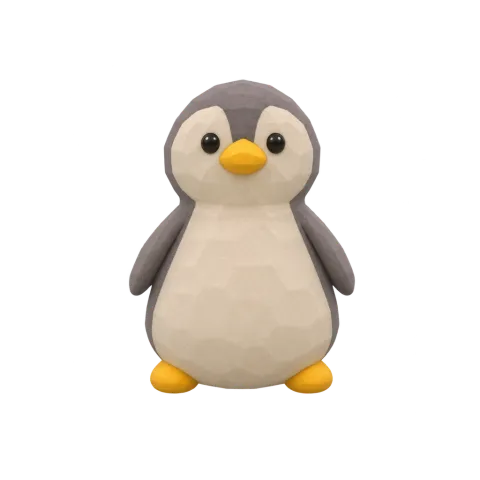
Front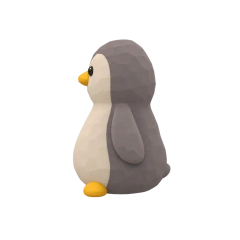
Left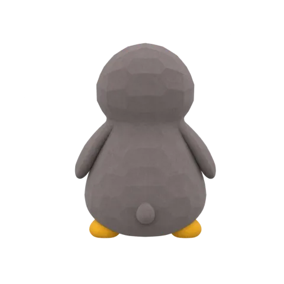
Back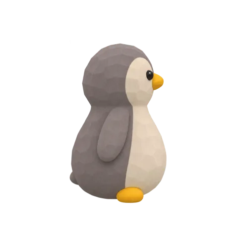
RightStep 3Turn the four views into a 3D model
The four images go into Tripo, which has a multi-view mode made for exactly this. It builds the shape (the mesh) and paints its surface (the textures). The pictures are only a reference; what comes out is a real 3D object I can spin around.
I check that the silhouette, the limbs and the markings look right, and then export the model.
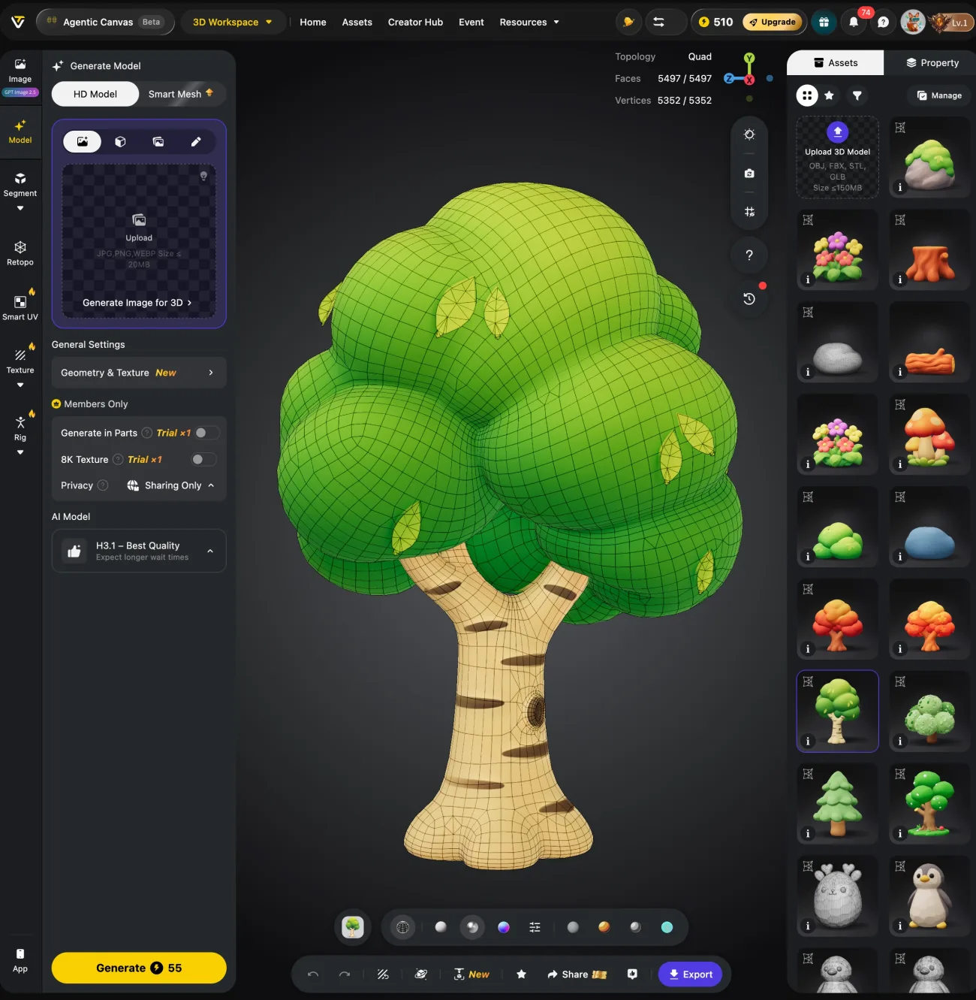
Step 4Give it a skeleton and teach it to walk
A model from Tripo is a statue. To move, it needs a skeleton inside it (a rig) and a set of animations. This part happens in Blender, but I am not the one clicking. Claude Code is connected to Blender and drives it: it builds the skeleton, attaches the mesh to it, bends the character into a few poses to check nothing tears, and then makes the animation clips.
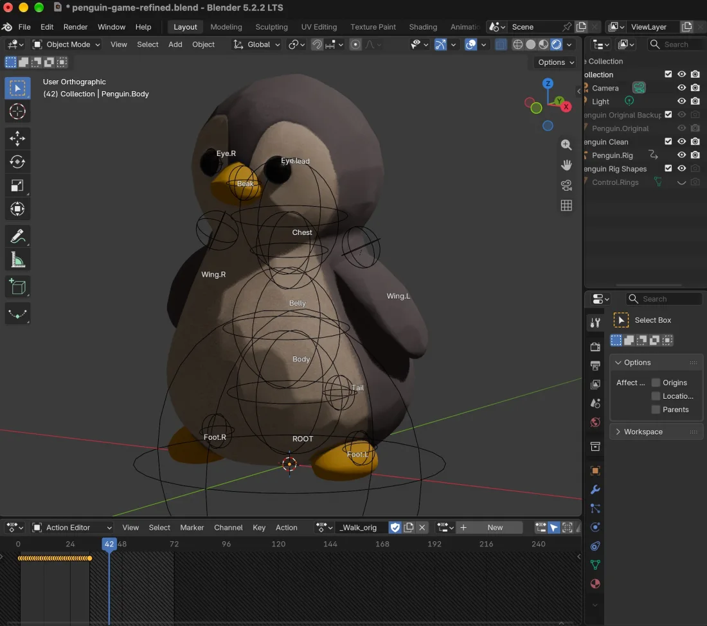
Each character has the same six clips, and the game picks them up by name: Idle, Walk, Run, JumpStart, JumpAir and Land.
Getting from Blender to the browser is automatic. Any Blender file I drop in the characters folder is exported to a game-ready file, and while I am working, saving in Blender reloads the game with the new version a moment later.
Step 5Grow a forest the same way
The trees, bushes, rocks and mushrooms have no real-world original, so there is nothing to photograph. For these I wrote a third skill, ai-game-cozy-assets, that makes the four views from a description instead.
The trick is a single picture. I picked one generated tree whose look I liked, and that tree is now bundled with the skill as the style everything else has to match: chunky, rounded, soft like clay, with a few painted marks instead of fine detail.
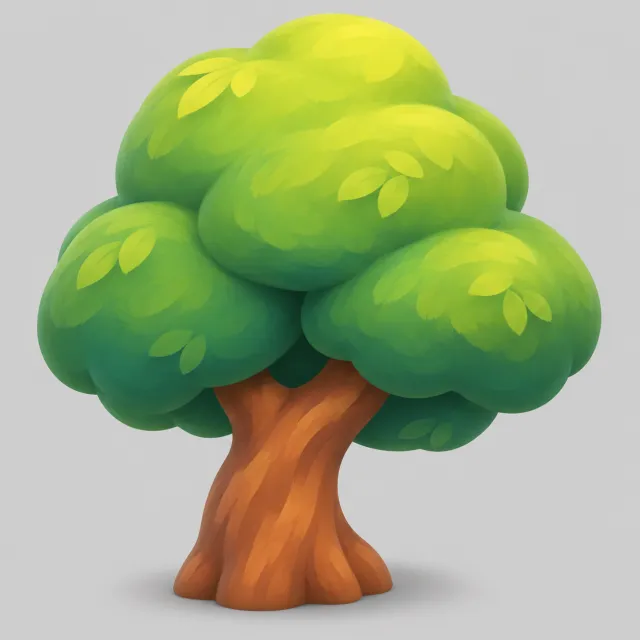
“Big, soft, rounded canopy made of a few chunky overlapping blobs, smooth and puffy like clay or marshmallow… Short, thick, slightly curved trunk in warm brown with simple painted bark strokes.” From the prompt behind the style tree. Every asset's prompt is saved next to its image.
Ask the skill for “an autumn maple tree” and it writes four prompts, generates the front, and then the back and both sides using the front as the design to keep.
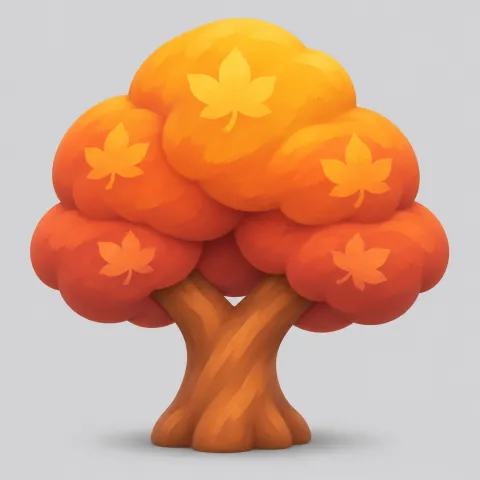
Front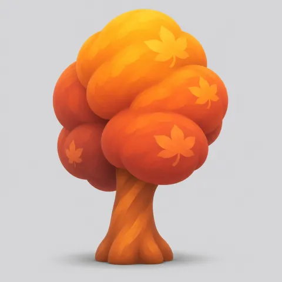
Left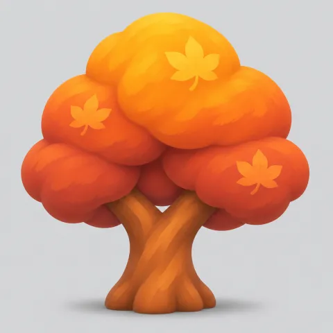
Back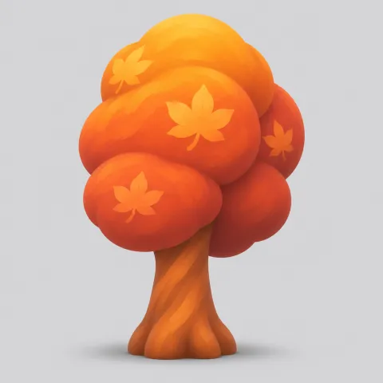
RightProps skip step 4, because a rock does not need a skeleton. The finished model goes into its own folder in the project and the game finds it on the next load. Each one is then planted dozens of times to make a forest.
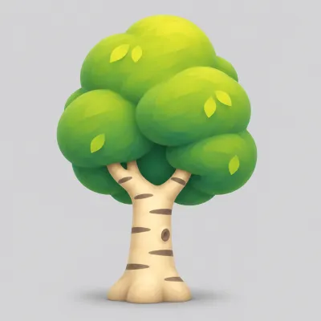
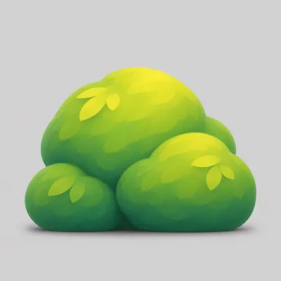
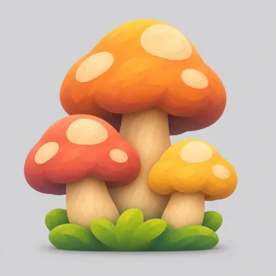
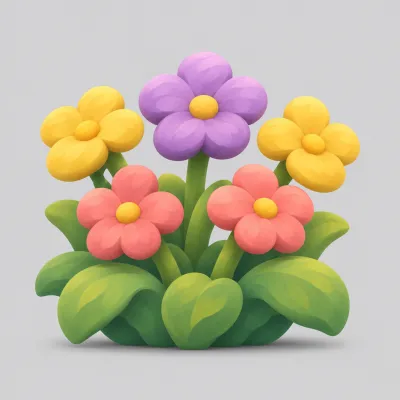
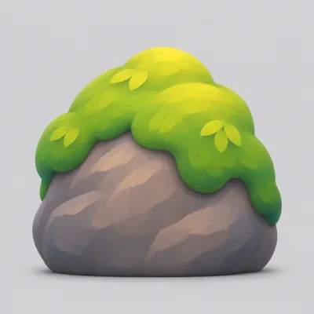
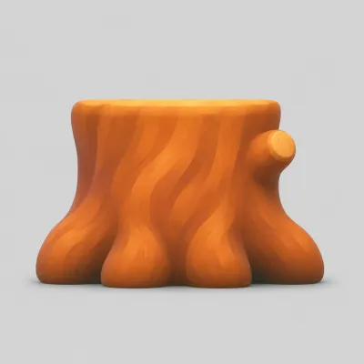
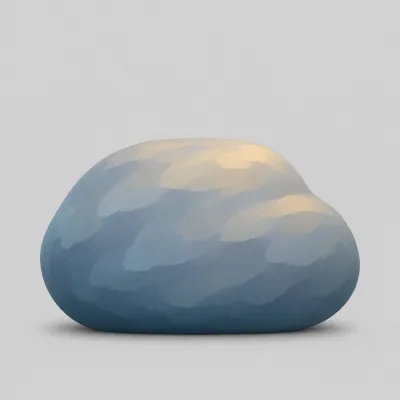
Step 6Have Claude Code write the game
The game itself is a web page built with three.js, a library for 3D in the browser. All of the code was written by Claude Code, using the Fable 5.2 and Opus 5.5 models. My part was to say what I wanted, play what came back, and say what to change.
It started as a room where the two characters could walk around, which is still in the game as the Testing Ground. Then came the games: first soccer, balloon volleyball, pillow sumo and herding baby stuffies, and later acorn toss, catching fireflies and a snowball fight.
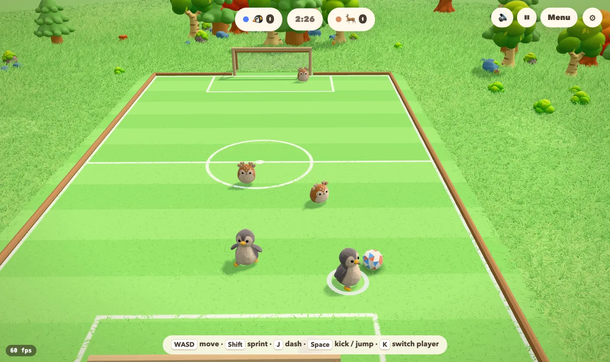
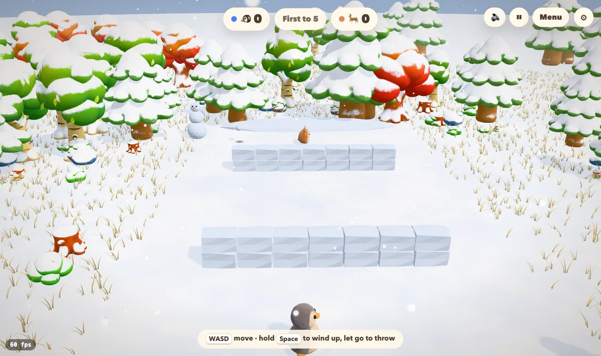
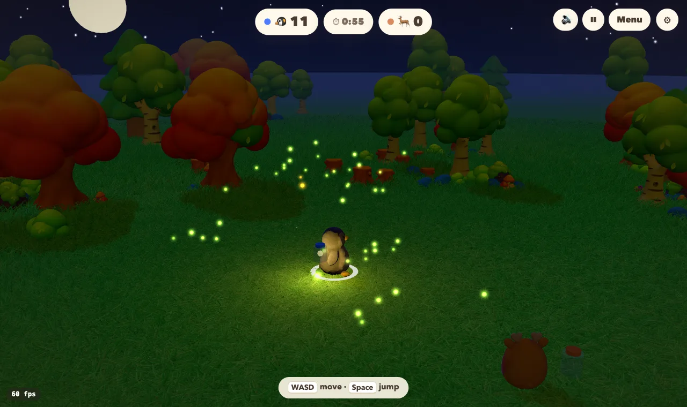
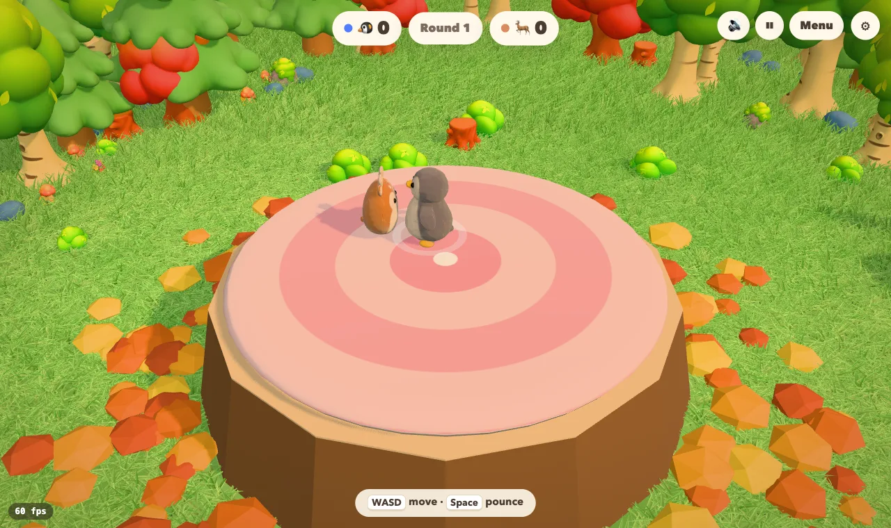
A few things I asked for along the way turned out better than I expected:
- They look like plush. The game draws Wino with terry-cloth loops, Cookie with velour, and the beak and feet with felt, to match the real toys.
- Winter cost no new models. Snow is an effect that settles on whatever faces the sky, so every tree and boulder from step 5 works in the snowball game unchanged.
- The friend plays back. You pick Wino or Cookie, and the computer plays the other one.
- It works on a phone. On an iPhone or iPad a thumb stick and buttons appear on screen.
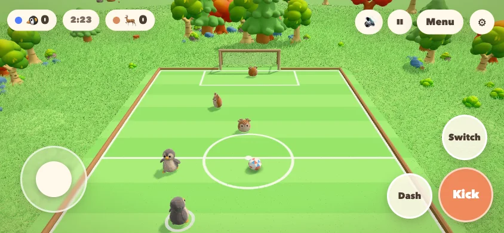
Step 7Put it on the internet
The game is hosted for free on GitHub Pages. Claude Code set that up too: every time a change is pushed to the project, GitHub rebuilds the game and publishes it about a minute later.
What did what
| Job | Tool | My part |
|---|---|---|
| Photos | A phone | Four pictures per toy |
| Clean views | Codex, running my photo skills | Point it at the folder, check the result |
| Forest art | Codex, running my cozy-assets skill | Name the thing I want |
| 3D models | Tripo | Upload four views, check, export |
| Rig and animation | Blender, driven by Claude Code | Watch the clips, ask for fixes |
| Game code | Claude Code with Fable 5.2 and Opus 5.5 | Describe, play, redirect |
| Hosting | GitHub Pages | Nothing after the first setup |
Go and play it
The characters are not generic. They are the actual penguin and the actual deer my kids play with, down to the fabric.
The code, the models and every image prompt are in the project on GitHub.